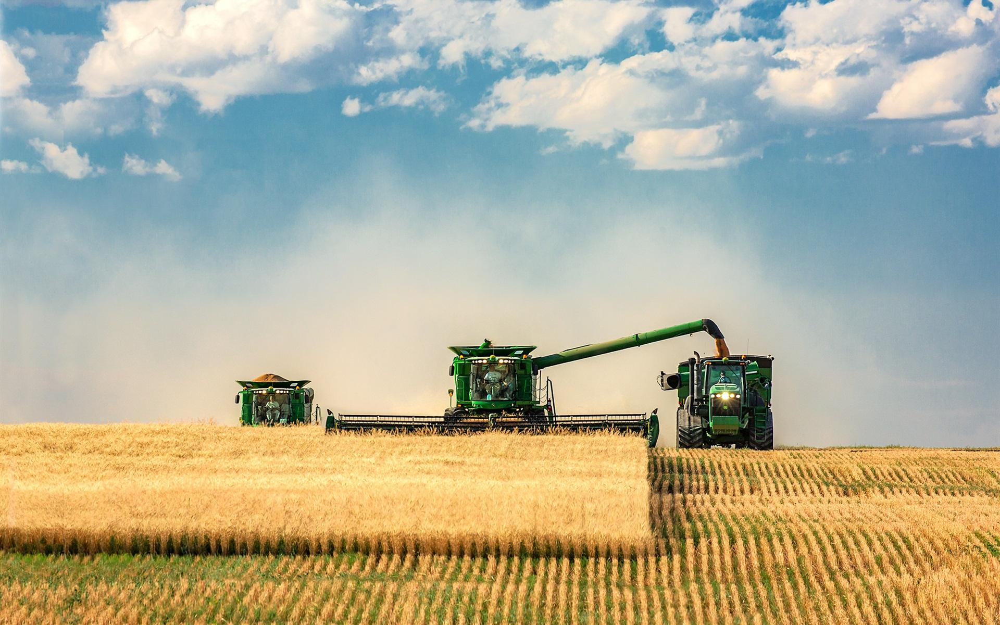
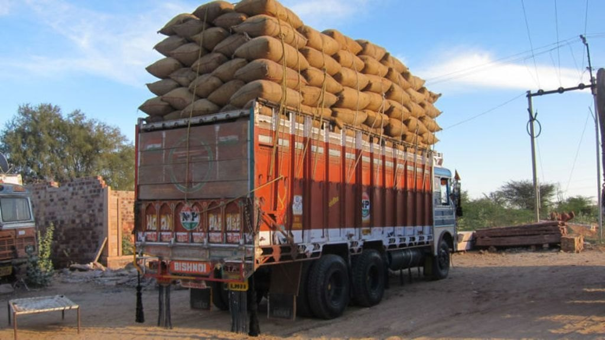
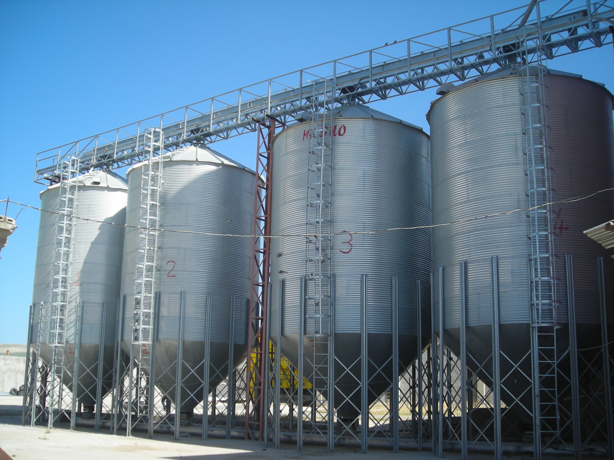

Agricultural marketing includes all activities involved in moving crops from farmers to consumers. It covers transportation, storage, processing, grading, and selling of agricultural products.
Farmers gather and bring crops to markets for selling.
Goods are transported from villages to cities.
Warehousing prevents spoilage and helps in price stability.
Raw crops are converted into usable products like flour or sugar.
Products are sorted based on quality standards.



Farmers are forced to sell quickly at low prices.
Too many intermediaries reduce farmer profits.
Leads to damage and wastage of goods.
Unstable prices create uncertainty.
Regulated markets protect farmers from exploitation.
Online trading platform for better pricing.
Farmers unite to increase bargaining power.
Minimum Support Price ensures fair income.